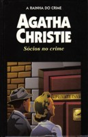

Sócios no Crime
Partners in Crime
Em Sócios no Crime, Tommy e Tuppence, dois jovens aventureiros, donos da Agência Internacional de Detetives, vêem-se envolvidos na mais fantástica série de aventuras. Para cada caso a ser solucionado, usam o estilo de um famoso e grande detetive: as artimanhas do padre Brown, a irônica e bem-humorada inteligência de Sherlock Holmes, a inigualável sutileza do genial Hercule Poirot. São 23 histórias de tirar o fôlego de qualquer leitor, conduzidas pela inconfundível habilidade de Agatha Christie em criar, a partir do banal e corriqueiro, as situações mais extraordinárias.